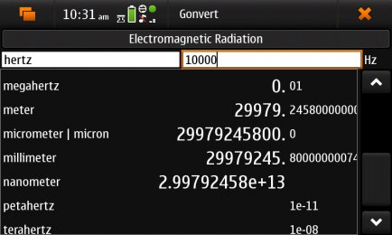

Gonvert is a thorough unit converter originally developed by Anthony Tekatch for Linux and ported to Maemo by Ed Page
Gonvert has been tested on Ubuntu 9.05, Maemo 5, and Maemo 4.1
Gonvert is Free Software and available under the GPLv2.1.
Gonvert v0.9.0-6 (See t.m.o Thread)

Gonvert on an n900